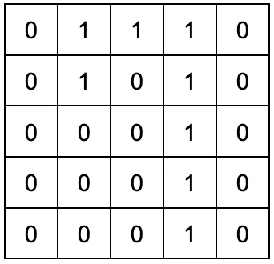

대부분의 CNN에서 Average Pooling보다 Max Pooling을 더 자주 쓰는 이유는 무엇일까요?
답을 고르면 바로 해설이 나타납니다.
Part 2 · 시각 지능의 핵심
이미지를 한 번에 통째로 보지 않고, 작은 창인 커널을 한 칸씩 움직여 패턴을 찾습니다. 이 페이지는 그 설명을 담을 타이포그래피와 수업용 컴포넌트가 같은 도로 위에서 잘 달리는지 확인하는 전시장입니다.
Typography
제목은 코드 에디터의 단단한 리듬을, 본문은 긴 설명에도 편안한 한글 가독성을 맡습니다.
합성곱은 작은 필터로 이미지의 모든 영역을 훑으면서 가로선, 세로선, 곡선 같은 특징을 찾습니다. 이렇게 추출된 결과물이 특성맵입니다.
Code block · Short
MNIST 픽셀값 0~255를 0~1 범위로 정규화하는 실제 코드입니다.
Code block · Highlight
강조된 세 줄이 특징을 찾고, 활성화하고, 중요한 값만 남기는 CNN의 눈입니다.
Code block · Collapse
12줄까지만 먼저 보이지만 복사할 때는 학습곡선 함수 전체가 복사됩니다.
Teaching cards
Quick check
답을 고르면 바로 해설이 나타납니다.
Comparison table
원본 S60의 비교 항목과 표현을 유지한 기본 표입니다.
| 구분 | MLP | CNN |
|---|---|---|
| 보는 방식 | 그림을 잘라서 한 줄로 폄 | 그림 모양 그대로 봄 |
| 정보 처리 | 픽셀 하나하나의 값만 봄 | 픽셀 주변의 패턴(모양)을 봄 |
| 특징 | 위치가 조금만 바뀌어도 못 알아봄 | 위치가 바뀌어도 잘 알아봄 |
| 비유 | 난도질된 퍼즐 조각 | 손전등으로 훑어 보기 |
Wide data table
MNIST CNN 구조의 실제 값을 유지하고, 좁은 화면에서는 첫 열을 고정한 채 가로로 스크롤합니다.
| Layer | Output shape | Kernel | Filters | Stride | Padding | Activation | Parameters |
|---|---|---|---|---|---|---|---|
| Input | 28×28×1 | — | — | — | — | — | 0 |
| Conv2D | 28×28×32 | 3×3 | 32 | 1 | same | ReLU | 320 |
| MaxPool2D | 14×14×32 | 2×2 | — | 2 | valid | — | 0 |
| Flatten | 6,272 | — | — | — | — | — | 0 |
| Dense | 128 | — | — | — | — | ReLU | 802,944 |
| Output | 10 | — | — | — | — | Softmax | 1,290 |
Figure

Widget shell
모든 위젯이 공유할 제목바, 조작 가능 태그, 본문, 컨트롤 바의 기본 골격입니다.